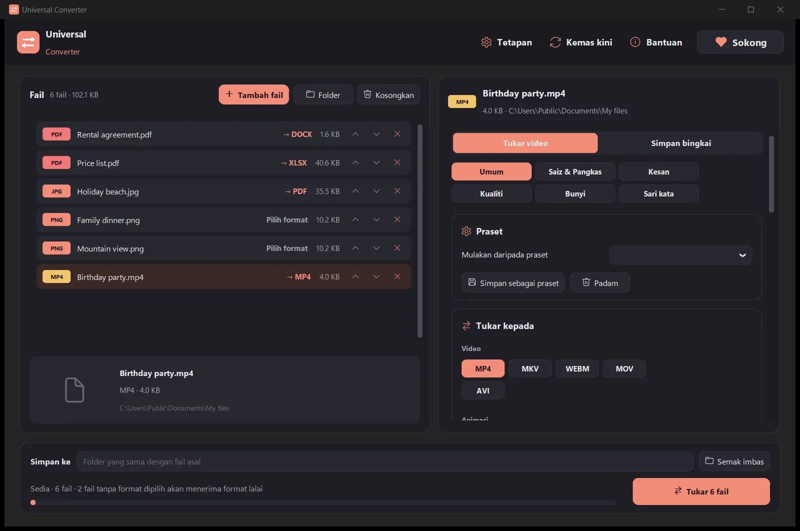

Simpan bunyi video sebagai MP3
Simpan lagu, ceramah atau mesej suara daripada video tanpa gambarnya. Anda boleh memotong bahagian yang anda mahu dahulu. Aplikasi Android menyimpan bunyi sebagai MP3, M4A, AAC, OGG, Opus, FLAC, WAV, AIFF atau MKA.
Cara memasang dan mengemas kini
- Buka fail .dmg yang dimuat turun dan seret Universal Converter ke Aplikasi.
- Buka aplikasi. Kali pertama, macOS menyekatnya kerana ia tidak ditandatangani oleh Apple: klik Selesai.
- Buka Seting Sistem > Privasi & Keselamatan, tatal ke bawah, klik Buka Juga dan masukkan kata laluan anda. Anda hanya perlu melakukannya sekali.
Kemas kini: jika anda membenarkannya semasa aplikasi mula-mula dibuka, ia mencari versi baharu setiap kali dimulakan, mengesahkan tandatangan digitalnya dan memasangnya apabila anda memilih.
Cara memasang dan mengemas kini
- Ketik Muat turun untuk Android pada telefon anda.
- Buka fail yang dimuat turun. Jika Android bertanya, benarkan penyemak imbas atau pengurus fail anda memasang aplikasi.
- Ketik Pasang.
Kemas kini: apabila anda membuka aplikasi, ia menyemak versi baharu dan memberitahu anda apabila sudah sedia. Muat turunnya dengan cara yang sama dan pasang di atas versi lama; tetapan anda dikekalkan.
Cara memasang dan mengemas kini
- Muat turun fail .AppImage.
- Jadikannya boleh laku: klik kanan, buka Sifat > Kebenaran dan benarkan ia dijalankan sebagai program (atau dalam terminal: chmod +x Universal-Converter-*.AppImage).
- Dwiklik padanya. Tiada apa-apa dipasang: aplikasi ini ialah satu fail ini.
Kemas kini: jika anda membenarkannya semasa aplikasi mula-mula dibuka, ia mencari versi baharu setiap kali dimulakan, mengesahkan tandatangan digitalnya dan menggantikan fail AppImage di tempatnya.
Cara melakukannya
- Buka Universal Converter.
- Seret fail anda atau seluruh folder ke dalam tetingkap, atau klik Tambah fail.
- Pilih MP3 (atau M4A, AAC, FLAC, WAV, AIFF, OGG, AC-3, MP2, WavPack, MKA, CAF, Opus) di bawah Tukar kepada.
- Klik Tukar. Fail baharu disimpan di sebelah fail asal, atau dalam folder yang anda pilih.

Mengapa luar talian?
Universal Converter melakukan kerja pada peranti anda sendiri. Fail anda kekal peribadi, fail besar tidak menjadi masalah, dan ia berfungsi tanpa sambungan internet.
Lebih banyak yang boleh dilakukan
- Tukar PDF kepada Word
- Tukar dokumen Word kepada PDF
- Gabungkan beberapa fail menjadi satu PDF
- Mampatkan PDF kepada saiz yang anda pilih
- Mampatkan PDF kepada 100 KB, 200 KB atau apa-apa saiz untuk borang dalam talian
- Tukar halaman PDF kepada imej JPG
- Jadikan dokumen imbasan sebagai fail Word yang boleh disunting
- Tukar gambar antara JPG, PNG, WEBP dan banyak lagi
- Ubah saiz gambar atau kecilkannya kepada saiz fail
- Ubah saiz foto atau tandatangan kepada 20 KB, 50 KB atau piksel yang tepat
- Gabungkan foto menjadi satu PDF
- JPG kepada PDF di bawah 100 KB
- Salin teks daripada gambar (OCR)
- Mampatkan video tanpa memuat naiknya
- Tukar video antara MP4, MKV, WebM, MOV dan AVI
- Buat GIF daripada video
- Tarik jadual daripada PDF ke Excel
- Tukar penyata bank PDF kepada Excel
- Ekstrak jadual daripada invois PDF ke Excel
- Tandatangani PDF
- Isi borang PDF